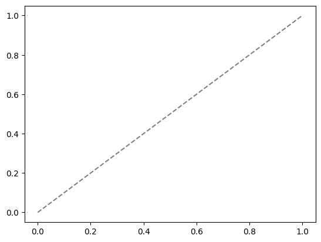

import torch
import torch.nn as nn
import torch.nn.functional as F
import torch.optim as optim
from torchvision import datasets, transforms
from torch.optim.lr_scheduler import StepLR
import numpy as np
import matplotlib.pyplot as plt
import easydictLoad datasets
import deeplake
dstrain = deeplake.load("hub://activeloop/cifar10-train")
dstest = deeplake.load("hub://activeloop/cifar10-test")-Opening dataset in read-only mode as you don't have write permissions.-This dataset can be visualized in Jupyter Notebook by ds.visualize() or at https://app.activeloop.ai/activeloop/cifar10-train
\hub://activeloop/cifar10-train loaded successfully.
Opening dataset in read-only mode as you don't have write permissions.\This dataset can be visualized in Jupyter Notebook by ds.visualize() or at https://app.activeloop.ai/activeloop/cifar10-test
/hub://activeloop/cifar10-test loaded successfully.
1 Define NN
class Net(nn.Module):
def __init__(self):
super(Net, self).__init__()
self.conv1 = nn.Conv2d(3, 32, 3, 1)
self.conv2 = nn.Conv2d(32, 64, 3, 1)
self.dropout1 = nn.Dropout(0.25)
self.dropout2 = nn.Dropout(0.5)
self.fc1 = nn.Linear(12544, 1024)
self.fc2 = nn.Linear(1024,128)
self.fc3 = nn.Linear(128, 10)
def forward(self, x):
x = self.conv1(x)
x = F.relu(x)
x = self.conv2(x)
x = F.relu(x)
x = F.max_pool2d(x, 2)
x = self.dropout1(x)
x = torch.flatten(x, 1)
x = self.fc1(x)
x = F.relu(x)
x = self.dropout2(x)
x = self.fc2(x)
x = F.relu(x)
x = self.fc3(x)
output = F.log_softmax(x, dim=1)
return output2 Train NN
def train(args, model, device, train_loader, optimizer, epoch):
model.train()
for batch_idx, data in enumerate(train_loader):
target = data.popitem()[1].squeeze()
images = data.popitem()[1]
images, target = images.to(device), target.to(device)
optimizer.zero_grad()
output = model(images)
loss = F.nll_loss(output, target)
loss.backward()
optimizer.step()
if batch_idx % args.log_interval == 0:
print('Train Epoch: {} [{}/{} ({:.0f}%)]\tLoss: {:.6f}'.format(
epoch, batch_idx * len(images), len(train_loader.dataset),
100. * batch_idx / len(train_loader), loss.item()))
if args.dry_run:
break
def test(model, device, test_loader):
model.eval()
test_loss = 0
correct = 0
with torch.no_grad():
for data in test_loader:
target = data.popitem()[1].squeeze()
images = data.popitem()[1]
images, target = images.to(device), target.to(device)
output = model(images)
test_loss += F.nll_loss(output, target, reduction='sum').item() # sum up batch loss
pred = output.argmax(dim=1, keepdim=True) # get the index of the max log-probability
correct += pred.eq(target.view_as(pred)).sum().item()
test_loss /= len(test_loader.dataset)
print('\nTest set: Average loss: {:.4f}, Accuracy: {}/{} ({:.0f}%)\n'.format(
test_loss, correct, len(test_loader.dataset),
100. * correct / len(test_loader.dataset)))# Training settings
args = easydict.EasyDict({
"batch_size": 64,
"test_batch_size": 10000,
"train_steps": 1000,
"no_cuda": False,
"no_mps": True,
"seed": 1,
"lr": 1.0,
"gamma": 0.7,
"epochs": 5,
"dry_run": False,
"log_interval": 10,
"save_model": False
})
use_cuda = not args.no_cuda and torch.cuda.is_available()
use_mps = not args.no_mps and torch.backends.mps.is_available()
torch.manual_seed(args.seed)
if use_cuda:
device = torch.device("cuda")
elif use_mps:
device = torch.device("mps")
else:
device = torch.device("cpu")
train_kwargs = {'batch_size': args.batch_size}
test_kwargs = {'batch_size': args.test_batch_size}
if use_cuda:
cuda_kwargs = {'num_workers': 1,
'pin_memory': True,
'shuffle': True}
train_kwargs.update(cuda_kwargs)
test_kwargs.update(cuda_kwargs)
tform = transforms.Compose([
transforms.ToPILImage(), # Must convert to PIL image for subsequent operations to run
transforms.RandomRotation(20), # Image augmentation
transforms.ToTensor(), # Must convert to pytorch tensor for subsequent operations to run
transforms.Normalize([0.5, 0.5, 0.5], [0.5, 0.5, 0.5]),
])
#PyTorch Dataloader
train_loader= dstrain.pytorch(batch_size = args.batch_size, num_workers = 1, transform = {'images': tform, 'labels': None}, shuffle = False)
test_loader= dstest.pytorch(batch_size = args.test_batch_size, num_workers = 1, transform = {'images': tform, 'labels': None}, shuffle = False)
model = Net().to(device)
optimizer = optim.Adadelta(model.parameters(), lr=args.lr)
scheduler = StepLR(optimizer, step_size=1, gamma=args.gamma)
for epoch in range(1, args.epochs + 1):
train(args, model, device, train_loader, optimizer, epoch)
test(model, device, test_loader)
scheduler.step()
if args.save_model:
torch.save(model.state_dict(), "cifar10.pt")C:\Users\TRBU\AppData\Local\Packages\PythonSoftwareFoundation.Python.3.11_qbz5n2kfra8p0\LocalCache\local-packages\Python311\site-packages\deeplake\integrations\pytorch\common.py:137: UserWarning: Decode method for tensors ['images'] is defaulting to numpy. Please consider specifying a decode_method in .pytorch() that maximizes the data preprocessing speed based on your transformation.
warnings.warn(Train Epoch: 1 [0/50000 (0%)] Loss: 2.313285
Train Epoch: 1 [640/50000 (1%)] Loss: 2.282982
Train Epoch: 1 [1280/50000 (3%)] Loss: 2.208825
Train Epoch: 1 [1920/50000 (4%)] Loss: 2.134269
Train Epoch: 1 [2560/50000 (5%)] Loss: 2.269092
Train Epoch: 1 [3200/50000 (6%)] Loss: 2.111916
Train Epoch: 1 [3840/50000 (8%)] Loss: 2.010026
Train Epoch: 1 [4480/50000 (9%)] Loss: 2.077068
Train Epoch: 1 [5120/50000 (10%)] Loss: 2.052944
Train Epoch: 1 [5760/50000 (12%)] Loss: 1.960852
Train Epoch: 1 [6400/50000 (13%)] Loss: 1.777685
Train Epoch: 1 [7040/50000 (14%)] Loss: 1.868737
Train Epoch: 1 [7680/50000 (15%)] Loss: 1.862934
Train Epoch: 1 [8320/50000 (17%)] Loss: 2.077532
Train Epoch: 1 [8960/50000 (18%)] Loss: 1.933085
Train Epoch: 1 [9600/50000 (19%)] Loss: 1.683305
Train Epoch: 1 [10240/50000 (20%)] Loss: 2.063454
Train Epoch: 1 [10880/50000 (22%)] Loss: 1.725807
Train Epoch: 1 [11520/50000 (23%)] Loss: 1.506280
Train Epoch: 1 [12160/50000 (24%)] Loss: 1.459907
Train Epoch: 1 [12800/50000 (26%)] Loss: 1.409407
Train Epoch: 1 [13440/50000 (27%)] Loss: 1.348096
Train Epoch: 1 [14080/50000 (28%)] Loss: 1.575606
Train Epoch: 1 [14720/50000 (29%)] Loss: 1.668249
Train Epoch: 1 [15360/50000 (31%)] Loss: 1.603507
Train Epoch: 1 [16000/50000 (32%)] Loss: 1.488422
Train Epoch: 1 [16640/50000 (33%)] Loss: 1.671651
Train Epoch: 1 [17280/50000 (35%)] Loss: 1.753842
Train Epoch: 1 [17920/50000 (36%)] Loss: 1.457419
Train Epoch: 1 [18560/50000 (37%)] Loss: 1.506835
Train Epoch: 1 [19200/50000 (38%)] Loss: 1.585900
Train Epoch: 1 [19840/50000 (40%)] Loss: 1.471904
Train Epoch: 1 [20480/50000 (41%)] Loss: 1.606318
Train Epoch: 1 [21120/50000 (42%)] Loss: 1.538922
Train Epoch: 1 [21760/50000 (43%)] Loss: 1.609186
Train Epoch: 1 [22400/50000 (45%)] Loss: 1.592638
Train Epoch: 1 [23040/50000 (46%)] Loss: 1.499499
Train Epoch: 1 [23680/50000 (47%)] Loss: 1.104229
Train Epoch: 1 [24320/50000 (49%)] Loss: 1.411076
Train Epoch: 1 [24960/50000 (50%)] Loss: 1.444193
Train Epoch: 1 [25600/50000 (51%)] Loss: 1.469637
Train Epoch: 1 [26240/50000 (52%)] Loss: 1.760564
Train Epoch: 1 [26880/50000 (54%)] Loss: 1.723221
Train Epoch: 1 [27520/50000 (55%)] Loss: 1.673604
Train Epoch: 1 [28160/50000 (56%)] Loss: 1.570982
Train Epoch: 1 [28800/50000 (58%)] Loss: 1.269223
Train Epoch: 1 [29440/50000 (59%)] Loss: 1.548963
Train Epoch: 1 [30080/50000 (60%)] Loss: 1.408138
Train Epoch: 1 [30720/50000 (61%)] Loss: 1.606970
Train Epoch: 1 [31360/50000 (63%)] Loss: 1.841886
Train Epoch: 1 [32000/50000 (64%)] Loss: 1.518400
Train Epoch: 1 [32640/50000 (65%)] Loss: 1.441026
Train Epoch: 1 [33280/50000 (66%)] Loss: 1.539006
Train Epoch: 1 [33920/50000 (68%)] Loss: 1.532090
Train Epoch: 1 [34560/50000 (69%)] Loss: 1.296856
Train Epoch: 1 [35200/50000 (70%)] Loss: 1.323091
Train Epoch: 1 [35840/50000 (72%)] Loss: 1.360830
Train Epoch: 1 [36480/50000 (73%)] Loss: 1.437707
Train Epoch: 1 [37120/50000 (74%)] Loss: 1.469991
Train Epoch: 1 [37760/50000 (75%)] Loss: 1.515797
Train Epoch: 1 [38400/50000 (77%)] Loss: 1.466494
Train Epoch: 1 [39040/50000 (78%)] Loss: 1.319731
Train Epoch: 1 [39680/50000 (79%)] Loss: 1.333355
Train Epoch: 1 [40320/50000 (81%)] Loss: 1.474976
Train Epoch: 1 [40960/50000 (82%)] Loss: 1.502240
Train Epoch: 1 [41600/50000 (83%)] Loss: 1.326739
Train Epoch: 1 [42240/50000 (84%)] Loss: 1.422899
Train Epoch: 1 [42880/50000 (86%)] Loss: 1.606984
Train Epoch: 1 [43520/50000 (87%)] Loss: 1.530502
Train Epoch: 1 [44160/50000 (88%)] Loss: 1.663767
Train Epoch: 1 [44800/50000 (90%)] Loss: 1.419918
Train Epoch: 1 [45440/50000 (91%)] Loss: 1.373313
Train Epoch: 1 [46080/50000 (92%)] Loss: 1.176762
Train Epoch: 1 [46720/50000 (93%)] Loss: 1.153574
Train Epoch: 1 [47360/50000 (95%)] Loss: 1.323359
Train Epoch: 1 [48000/50000 (96%)] Loss: 1.659082
Train Epoch: 1 [48640/50000 (97%)] Loss: 1.240108
Train Epoch: 1 [49280/50000 (98%)] Loss: 1.389967
Train Epoch: 1 [49920/50000 (100%)] Loss: 1.121231
Test set: Average loss: 1.4419, Accuracy: 4898/10000 (49%)
Train Epoch: 2 [0/50000 (0%)] Loss: 1.378913
Train Epoch: 2 [640/50000 (1%)] Loss: 1.198331
Train Epoch: 2 [1280/50000 (3%)] Loss: 1.216324
Train Epoch: 2 [1920/50000 (4%)] Loss: 1.285236
Train Epoch: 2 [2560/50000 (5%)] Loss: 1.136003
Train Epoch: 2 [3200/50000 (6%)] Loss: 1.212991
Train Epoch: 2 [3840/50000 (8%)] Loss: 1.292115
Train Epoch: 2 [4480/50000 (9%)] Loss: 1.599862
Train Epoch: 2 [5120/50000 (10%)] Loss: 1.506264
Train Epoch: 2 [5760/50000 (12%)] Loss: 1.236358
Train Epoch: 2 [6400/50000 (13%)] Loss: 1.208350
Train Epoch: 2 [7040/50000 (14%)] Loss: 1.315190
Train Epoch: 2 [7680/50000 (15%)] Loss: 1.443272
Train Epoch: 2 [8320/50000 (17%)] Loss: 1.309296
Train Epoch: 2 [8960/50000 (18%)] Loss: 1.361944
Train Epoch: 2 [9600/50000 (19%)] Loss: 1.128841
Train Epoch: 2 [10240/50000 (20%)] Loss: 1.446547
Train Epoch: 2 [10880/50000 (22%)] Loss: 1.302169
Train Epoch: 2 [11520/50000 (23%)] Loss: 1.194471
Train Epoch: 2 [12160/50000 (24%)] Loss: 1.065597
Train Epoch: 2 [12800/50000 (26%)] Loss: 1.073145
Train Epoch: 2 [13440/50000 (27%)] Loss: 0.927900
Train Epoch: 2 [14080/50000 (28%)] Loss: 1.147871
Train Epoch: 2 [14720/50000 (29%)] Loss: 1.041916
Train Epoch: 2 [15360/50000 (31%)] Loss: 1.245395
Train Epoch: 2 [16000/50000 (32%)] Loss: 1.317419
Train Epoch: 2 [16640/50000 (33%)] Loss: 1.200316
Train Epoch: 2 [17280/50000 (35%)] Loss: 1.116633
Train Epoch: 2 [17920/50000 (36%)] Loss: 1.296172
Train Epoch: 2 [18560/50000 (37%)] Loss: 1.108103
Train Epoch: 2 [19200/50000 (38%)] Loss: 1.251444
Train Epoch: 2 [19840/50000 (40%)] Loss: 1.202977
Train Epoch: 2 [20480/50000 (41%)] Loss: 1.171659
Train Epoch: 2 [21120/50000 (42%)] Loss: 1.097618
Train Epoch: 2 [21760/50000 (43%)] Loss: 1.126731
Train Epoch: 2 [22400/50000 (45%)] Loss: 1.238631
Train Epoch: 2 [23040/50000 (46%)] Loss: 1.136269
Train Epoch: 2 [23680/50000 (47%)] Loss: 0.847121
Train Epoch: 2 [24320/50000 (49%)] Loss: 1.181444
Train Epoch: 2 [24960/50000 (50%)] Loss: 1.178731
Train Epoch: 2 [25600/50000 (51%)] Loss: 1.105801
Train Epoch: 2 [26240/50000 (52%)] Loss: 1.350893
Train Epoch: 2 [26880/50000 (54%)] Loss: 1.190951
Train Epoch: 2 [27520/50000 (55%)] Loss: 1.191452
Train Epoch: 2 [28160/50000 (56%)] Loss: 1.101880
Train Epoch: 2 [28800/50000 (58%)] Loss: 1.000146
Train Epoch: 2 [29440/50000 (59%)] Loss: 1.215281
Train Epoch: 2 [30080/50000 (60%)] Loss: 1.067517
Train Epoch: 2 [30720/50000 (61%)] Loss: 1.349930
Train Epoch: 2 [31360/50000 (63%)] Loss: 1.285968
Train Epoch: 2 [32000/50000 (64%)] Loss: 1.294853
Train Epoch: 2 [32640/50000 (65%)] Loss: 1.076781
Train Epoch: 2 [33280/50000 (66%)] Loss: 1.232701
Train Epoch: 2 [33920/50000 (68%)] Loss: 1.425102
Train Epoch: 2 [34560/50000 (69%)] Loss: 1.031752
Train Epoch: 2 [35200/50000 (70%)] Loss: 0.973785
Train Epoch: 2 [35840/50000 (72%)] Loss: 1.028986
Train Epoch: 2 [36480/50000 (73%)] Loss: 1.086849
Train Epoch: 2 [37120/50000 (74%)] Loss: 1.093705
Train Epoch: 2 [37760/50000 (75%)] Loss: 1.365376
Train Epoch: 2 [38400/50000 (77%)] Loss: 1.201413
Train Epoch: 2 [39040/50000 (78%)] Loss: 1.198185
Train Epoch: 2 [39680/50000 (79%)] Loss: 1.009418
Train Epoch: 2 [40320/50000 (81%)] Loss: 1.220035
Train Epoch: 2 [40960/50000 (82%)] Loss: 1.369481
Train Epoch: 2 [41600/50000 (83%)] Loss: 1.086778
Train Epoch: 2 [42240/50000 (84%)] Loss: 0.972079
Train Epoch: 2 [42880/50000 (86%)] Loss: 1.289241
Train Epoch: 2 [43520/50000 (87%)] Loss: 1.317674
Train Epoch: 2 [44160/50000 (88%)] Loss: 1.329700
Train Epoch: 2 [44800/50000 (90%)] Loss: 1.210882
Train Epoch: 2 [45440/50000 (91%)] Loss: 1.141351
Train Epoch: 2 [46080/50000 (92%)] Loss: 0.996710
Train Epoch: 2 [46720/50000 (93%)] Loss: 1.126413
Train Epoch: 2 [47360/50000 (95%)] Loss: 1.128133
Train Epoch: 2 [48000/50000 (96%)] Loss: 1.420765
Train Epoch: 2 [48640/50000 (97%)] Loss: 1.150172
Train Epoch: 2 [49280/50000 (98%)] Loss: 1.257930
Train Epoch: 2 [49920/50000 (100%)] Loss: 1.142436
Test set: Average loss: 1.2000, Accuracy: 5772/10000 (58%)
Train Epoch: 3 [0/50000 (0%)] Loss: 1.106311
Train Epoch: 3 [640/50000 (1%)] Loss: 1.118895
Train Epoch: 3 [1280/50000 (3%)] Loss: 1.066791
Train Epoch: 3 [1920/50000 (4%)] Loss: 1.179025
Train Epoch: 3 [2560/50000 (5%)] Loss: 0.769312
Train Epoch: 3 [3200/50000 (6%)] Loss: 0.894129
Train Epoch: 3 [3840/50000 (8%)] Loss: 0.975440
Train Epoch: 3 [4480/50000 (9%)] Loss: 1.559509
Train Epoch: 3 [5120/50000 (10%)] Loss: 1.240414
Train Epoch: 3 [5760/50000 (12%)] Loss: 0.959338
Train Epoch: 3 [6400/50000 (13%)] Loss: 1.049085
Train Epoch: 3 [7040/50000 (14%)] Loss: 1.169668
Train Epoch: 3 [7680/50000 (15%)] Loss: 1.154216
Train Epoch: 3 [8320/50000 (17%)] Loss: 1.096240
Train Epoch: 3 [8960/50000 (18%)] Loss: 1.224254
Train Epoch: 3 [9600/50000 (19%)] Loss: 1.075554
Train Epoch: 3 [10240/50000 (20%)] Loss: 1.222097
Train Epoch: 3 [10880/50000 (22%)] Loss: 1.110879
Train Epoch: 3 [11520/50000 (23%)] Loss: 0.925599
Train Epoch: 3 [12160/50000 (24%)] Loss: 0.948937
Train Epoch: 3 [12800/50000 (26%)] Loss: 0.850482
Train Epoch: 3 [13440/50000 (27%)] Loss: 0.734940
Train Epoch: 3 [14080/50000 (28%)] Loss: 1.015657
Train Epoch: 3 [14720/50000 (29%)] Loss: 0.818904
Train Epoch: 3 [15360/50000 (31%)] Loss: 1.080822
Train Epoch: 3 [16000/50000 (32%)] Loss: 0.929733
Train Epoch: 3 [16640/50000 (33%)] Loss: 0.942542
Train Epoch: 3 [17280/50000 (35%)] Loss: 1.057465
Train Epoch: 3 [17920/50000 (36%)] Loss: 1.033946
Train Epoch: 3 [18560/50000 (37%)] Loss: 0.932535
Train Epoch: 3 [19200/50000 (38%)] Loss: 1.121060
Train Epoch: 3 [19840/50000 (40%)] Loss: 1.060791
Train Epoch: 3 [20480/50000 (41%)] Loss: 1.073810
Train Epoch: 3 [21120/50000 (42%)] Loss: 0.935396
Train Epoch: 3 [21760/50000 (43%)] Loss: 0.982961
Train Epoch: 3 [22400/50000 (45%)] Loss: 1.105762
Train Epoch: 3 [23040/50000 (46%)] Loss: 0.888094
Train Epoch: 3 [23680/50000 (47%)] Loss: 0.925483
Train Epoch: 3 [24320/50000 (49%)] Loss: 0.897060
Train Epoch: 3 [24960/50000 (50%)] Loss: 0.948025
Train Epoch: 3 [25600/50000 (51%)] Loss: 0.818769
Train Epoch: 3 [26240/50000 (52%)] Loss: 0.949620
Train Epoch: 3 [26880/50000 (54%)] Loss: 1.234287
Train Epoch: 3 [27520/50000 (55%)] Loss: 1.113315
Train Epoch: 3 [28160/50000 (56%)] Loss: 0.831357
Train Epoch: 3 [28800/50000 (58%)] Loss: 0.828645
Train Epoch: 3 [29440/50000 (59%)] Loss: 1.025591
Train Epoch: 3 [30080/50000 (60%)] Loss: 0.977817
Train Epoch: 3 [30720/50000 (61%)] Loss: 1.267129
Train Epoch: 3 [31360/50000 (63%)] Loss: 1.150873
Train Epoch: 3 [32000/50000 (64%)] Loss: 1.170255
Train Epoch: 3 [32640/50000 (65%)] Loss: 1.000037
Train Epoch: 3 [33280/50000 (66%)] Loss: 1.009243
Train Epoch: 3 [33920/50000 (68%)] Loss: 1.203480
Train Epoch: 3 [34560/50000 (69%)] Loss: 0.962400
Train Epoch: 3 [35200/50000 (70%)] Loss: 0.789686
Train Epoch: 3 [35840/50000 (72%)] Loss: 0.923952
Train Epoch: 3 [36480/50000 (73%)] Loss: 0.888108
Train Epoch: 3 [37120/50000 (74%)] Loss: 1.137675
Train Epoch: 3 [37760/50000 (75%)] Loss: 1.419243
Train Epoch: 3 [38400/50000 (77%)] Loss: 1.007365
Train Epoch: 3 [39040/50000 (78%)] Loss: 1.051619
Train Epoch: 3 [39680/50000 (79%)] Loss: 0.997642
Train Epoch: 3 [40320/50000 (81%)] Loss: 1.172052
Train Epoch: 3 [40960/50000 (82%)] Loss: 1.088392
Train Epoch: 3 [41600/50000 (83%)] Loss: 0.769138
Train Epoch: 3 [42240/50000 (84%)] Loss: 0.822543
Train Epoch: 3 [42880/50000 (86%)] Loss: 1.007707
Train Epoch: 3 [43520/50000 (87%)] Loss: 1.311535
Train Epoch: 3 [44160/50000 (88%)] Loss: 1.093629
Train Epoch: 3 [44800/50000 (90%)] Loss: 0.966524
Train Epoch: 3 [45440/50000 (91%)] Loss: 0.816190
Train Epoch: 3 [46080/50000 (92%)] Loss: 0.743389
Train Epoch: 3 [46720/50000 (93%)] Loss: 0.899239
Train Epoch: 3 [47360/50000 (95%)] Loss: 0.939997
Train Epoch: 3 [48000/50000 (96%)] Loss: 1.112430
Train Epoch: 3 [48640/50000 (97%)] Loss: 0.867695
Train Epoch: 3 [49280/50000 (98%)] Loss: 0.947271
Train Epoch: 3 [49920/50000 (100%)] Loss: 0.918479
Test set: Average loss: 0.9713, Accuracy: 6575/10000 (66%)
Train Epoch: 4 [0/50000 (0%)] Loss: 0.866512
Train Epoch: 4 [640/50000 (1%)] Loss: 1.175087
Train Epoch: 4 [1280/50000 (3%)] Loss: 1.035645
Train Epoch: 4 [1920/50000 (4%)] Loss: 1.105392
Train Epoch: 4 [2560/50000 (5%)] Loss: 0.700491
Train Epoch: 4 [3200/50000 (6%)] Loss: 0.837848
Train Epoch: 4 [3840/50000 (8%)] Loss: 1.034280
Train Epoch: 4 [4480/50000 (9%)] Loss: 1.283377
Train Epoch: 4 [5120/50000 (10%)] Loss: 0.961596
Train Epoch: 4 [5760/50000 (12%)] Loss: 0.971634
Train Epoch: 4 [6400/50000 (13%)] Loss: 0.807414
Train Epoch: 4 [7040/50000 (14%)] Loss: 1.058948
Train Epoch: 4 [7680/50000 (15%)] Loss: 1.161734
Train Epoch: 4 [8320/50000 (17%)] Loss: 0.840495
Train Epoch: 4 [8960/50000 (18%)] Loss: 1.146661
Train Epoch: 4 [9600/50000 (19%)] Loss: 0.867736
Train Epoch: 4 [10240/50000 (20%)] Loss: 0.893812
Train Epoch: 4 [10880/50000 (22%)] Loss: 1.222466
Train Epoch: 4 [11520/50000 (23%)] Loss: 0.939819
Train Epoch: 4 [12160/50000 (24%)] Loss: 0.830272
Train Epoch: 4 [12800/50000 (26%)] Loss: 0.728441
Train Epoch: 4 [13440/50000 (27%)] Loss: 0.719149
Train Epoch: 4 [14080/50000 (28%)] Loss: 0.886137
Train Epoch: 4 [14720/50000 (29%)] Loss: 0.868922
Train Epoch: 4 [15360/50000 (31%)] Loss: 0.837847
Train Epoch: 4 [16000/50000 (32%)] Loss: 0.819661
Train Epoch: 4 [16640/50000 (33%)] Loss: 0.924742
Train Epoch: 4 [17280/50000 (35%)] Loss: 0.972490
Train Epoch: 4 [17920/50000 (36%)] Loss: 0.956271
Train Epoch: 4 [18560/50000 (37%)] Loss: 0.890450
Train Epoch: 4 [19200/50000 (38%)] Loss: 1.051242
Train Epoch: 4 [19840/50000 (40%)] Loss: 0.905861
Train Epoch: 4 [20480/50000 (41%)] Loss: 0.897374
Train Epoch: 4 [21120/50000 (42%)] Loss: 0.857245
Train Epoch: 4 [21760/50000 (43%)] Loss: 0.873150
Train Epoch: 4 [22400/50000 (45%)] Loss: 0.867174
Train Epoch: 4 [23040/50000 (46%)] Loss: 0.963702
Train Epoch: 4 [23680/50000 (47%)] Loss: 0.707031
Train Epoch: 4 [24320/50000 (49%)] Loss: 0.833064
Train Epoch: 4 [24960/50000 (50%)] Loss: 0.687881
Train Epoch: 4 [25600/50000 (51%)] Loss: 0.700060
Train Epoch: 4 [26240/50000 (52%)] Loss: 0.820766
Train Epoch: 4 [26880/50000 (54%)] Loss: 1.067445
Train Epoch: 4 [27520/50000 (55%)] Loss: 0.805150
Train Epoch: 4 [28160/50000 (56%)] Loss: 0.790336
Train Epoch: 4 [28800/50000 (58%)] Loss: 0.700028
Train Epoch: 4 [29440/50000 (59%)] Loss: 0.898754
Train Epoch: 4 [30080/50000 (60%)] Loss: 0.931139
Train Epoch: 4 [30720/50000 (61%)] Loss: 1.080048
Train Epoch: 4 [31360/50000 (63%)] Loss: 1.001051
Train Epoch: 4 [32000/50000 (64%)] Loss: 1.058861
Train Epoch: 4 [32640/50000 (65%)] Loss: 0.793142
Train Epoch: 4 [33280/50000 (66%)] Loss: 0.992159
Train Epoch: 4 [33920/50000 (68%)] Loss: 1.075444
Train Epoch: 4 [34560/50000 (69%)] Loss: 0.790325
Train Epoch: 4 [35200/50000 (70%)] Loss: 0.838280
Train Epoch: 4 [35840/50000 (72%)] Loss: 0.830364
Train Epoch: 4 [36480/50000 (73%)] Loss: 0.787938
Train Epoch: 4 [37120/50000 (74%)] Loss: 1.034125
Train Epoch: 4 [37760/50000 (75%)] Loss: 1.060737
Train Epoch: 4 [38400/50000 (77%)] Loss: 0.809023
Train Epoch: 4 [39040/50000 (78%)] Loss: 1.096184
Train Epoch: 4 [39680/50000 (79%)] Loss: 0.913285
Train Epoch: 4 [40320/50000 (81%)] Loss: 0.946319
Train Epoch: 4 [40960/50000 (82%)] Loss: 1.004628
Train Epoch: 4 [41600/50000 (83%)] Loss: 0.875521
Train Epoch: 4 [42240/50000 (84%)] Loss: 0.697994
Train Epoch: 4 [42880/50000 (86%)] Loss: 1.068853
Train Epoch: 4 [43520/50000 (87%)] Loss: 1.065966
Train Epoch: 4 [44160/50000 (88%)] Loss: 1.069152
Train Epoch: 4 [44800/50000 (90%)] Loss: 0.936944
Train Epoch: 4 [45440/50000 (91%)] Loss: 0.903693
Train Epoch: 4 [46080/50000 (92%)] Loss: 0.681967
Train Epoch: 4 [46720/50000 (93%)] Loss: 0.714273
Train Epoch: 4 [47360/50000 (95%)] Loss: 0.877776
Train Epoch: 4 [48000/50000 (96%)] Loss: 1.090610
Train Epoch: 4 [48640/50000 (97%)] Loss: 0.997429
Train Epoch: 4 [49280/50000 (98%)] Loss: 0.745352
Train Epoch: 4 [49920/50000 (100%)] Loss: 0.794372
Test set: Average loss: 0.8861, Accuracy: 6922/10000 (69%)
Train Epoch: 5 [0/50000 (0%)] Loss: 0.746531
Train Epoch: 5 [640/50000 (1%)] Loss: 1.024316
Train Epoch: 5 [1280/50000 (3%)] Loss: 1.070370
Train Epoch: 5 [1920/50000 (4%)] Loss: 0.830270
Train Epoch: 5 [2560/50000 (5%)] Loss: 0.632230
Train Epoch: 5 [3200/50000 (6%)] Loss: 0.835081
Train Epoch: 5 [3840/50000 (8%)] Loss: 0.908271
Train Epoch: 5 [4480/50000 (9%)] Loss: 1.237394
Train Epoch: 5 [5120/50000 (10%)] Loss: 1.119385
Train Epoch: 5 [5760/50000 (12%)] Loss: 0.967707
Train Epoch: 5 [6400/50000 (13%)] Loss: 0.760630
Train Epoch: 5 [7040/50000 (14%)] Loss: 1.065303
Train Epoch: 5 [7680/50000 (15%)] Loss: 0.981981
Train Epoch: 5 [8320/50000 (17%)] Loss: 0.755415
Train Epoch: 5 [8960/50000 (18%)] Loss: 0.978959
Train Epoch: 5 [9600/50000 (19%)] Loss: 0.711403
Train Epoch: 5 [10240/50000 (20%)] Loss: 0.979580
Train Epoch: 5 [10880/50000 (22%)] Loss: 1.024152
Train Epoch: 5 [11520/50000 (23%)] Loss: 0.775037
Train Epoch: 5 [12160/50000 (24%)] Loss: 0.805975
Train Epoch: 5 [12800/50000 (26%)] Loss: 0.636809
Train Epoch: 5 [13440/50000 (27%)] Loss: 0.585240
Train Epoch: 5 [14080/50000 (28%)] Loss: 0.842368
Train Epoch: 5 [14720/50000 (29%)] Loss: 0.579158
Train Epoch: 5 [15360/50000 (31%)] Loss: 0.702072
Train Epoch: 5 [16000/50000 (32%)] Loss: 0.775665
Train Epoch: 5 [16640/50000 (33%)] Loss: 0.868825
Train Epoch: 5 [17280/50000 (35%)] Loss: 0.897188
Train Epoch: 5 [17920/50000 (36%)] Loss: 0.903147
Train Epoch: 5 [18560/50000 (37%)] Loss: 0.765962
Train Epoch: 5 [19200/50000 (38%)] Loss: 0.914700
Train Epoch: 5 [19840/50000 (40%)] Loss: 0.890657
Train Epoch: 5 [20480/50000 (41%)] Loss: 0.778717
Train Epoch: 5 [21120/50000 (42%)] Loss: 0.801655
Train Epoch: 5 [21760/50000 (43%)] Loss: 0.732074
Train Epoch: 5 [22400/50000 (45%)] Loss: 0.892907
Train Epoch: 5 [23040/50000 (46%)] Loss: 0.881976
Train Epoch: 5 [23680/50000 (47%)] Loss: 0.692155
Train Epoch: 5 [24320/50000 (49%)] Loss: 0.768728
Train Epoch: 5 [24960/50000 (50%)] Loss: 0.683051
Train Epoch: 5 [25600/50000 (51%)] Loss: 0.685886
Train Epoch: 5 [26240/50000 (52%)] Loss: 0.873788
Train Epoch: 5 [26880/50000 (54%)] Loss: 0.903998
Train Epoch: 5 [27520/50000 (55%)] Loss: 0.825126
Train Epoch: 5 [28160/50000 (56%)] Loss: 0.720055
Train Epoch: 5 [28800/50000 (58%)] Loss: 0.709673
Train Epoch: 5 [29440/50000 (59%)] Loss: 0.725343
Train Epoch: 5 [30080/50000 (60%)] Loss: 0.906208
Train Epoch: 5 [30720/50000 (61%)] Loss: 1.046064
Train Epoch: 5 [31360/50000 (63%)] Loss: 1.048792
Train Epoch: 5 [32000/50000 (64%)] Loss: 1.005020
Train Epoch: 5 [32640/50000 (65%)] Loss: 0.862447
Train Epoch: 5 [33280/50000 (66%)] Loss: 0.850401
Train Epoch: 5 [33920/50000 (68%)] Loss: 0.885995
Train Epoch: 5 [34560/50000 (69%)] Loss: 0.767475
Train Epoch: 5 [35200/50000 (70%)] Loss: 0.648046
Train Epoch: 5 [35840/50000 (72%)] Loss: 0.714794
Train Epoch: 5 [36480/50000 (73%)] Loss: 0.767043
Train Epoch: 5 [37120/50000 (74%)] Loss: 0.815850
Train Epoch: 5 [37760/50000 (75%)] Loss: 0.934902
Train Epoch: 5 [38400/50000 (77%)] Loss: 0.830273
Train Epoch: 5 [39040/50000 (78%)] Loss: 0.834118
Train Epoch: 5 [39680/50000 (79%)] Loss: 0.873721
Train Epoch: 5 [40320/50000 (81%)] Loss: 0.876411
Train Epoch: 5 [40960/50000 (82%)] Loss: 0.891833
Train Epoch: 5 [41600/50000 (83%)] Loss: 0.695041
Train Epoch: 5 [42240/50000 (84%)] Loss: 0.595918
Train Epoch: 5 [42880/50000 (86%)] Loss: 0.927457
Train Epoch: 5 [43520/50000 (87%)] Loss: 1.037243
Train Epoch: 5 [44160/50000 (88%)] Loss: 1.007808
Train Epoch: 5 [44800/50000 (90%)] Loss: 0.866399
Train Epoch: 5 [45440/50000 (91%)] Loss: 0.826077
Train Epoch: 5 [46080/50000 (92%)] Loss: 0.669492
Train Epoch: 5 [46720/50000 (93%)] Loss: 0.778732
Train Epoch: 5 [47360/50000 (95%)] Loss: 0.575369
Train Epoch: 5 [48000/50000 (96%)] Loss: 0.974612
Train Epoch: 5 [48640/50000 (97%)] Loss: 0.713020
Train Epoch: 5 [49280/50000 (98%)] Loss: 0.821374
Train Epoch: 5 [49920/50000 (100%)] Loss: 0.733450
Test set: Average loss: 0.8525, Accuracy: 7088/10000 (71%)
3 Tests on trained NN
model.eval()
with torch.no_grad():
for data, target in test_loader:
data, target = data.to(device), target.to(device)
output = model(data)
pred = output.argmax(dim=1, keepdim=True) # get the index of the max log-probability
pred2 = torch.topk(output, k=2, dim=1)[1][:,1] # index of second largest log-prob
pred2 = pred2.reshape(pred2.shape[0],1)3.1 Correct classified vs actual number as a function of ML confidence for max log-prob
## Transform to range [0,1]
output_softmax = torch.softmax(output, dim=1)
## Select largest entry
selected_entries = torch.gather(output_softmax, 1, pred)step = 0.05
cat = 1
binMean = []
correctFreq = []
error = []
correct = []
for value in np.arange(0, 1.0, step):
start = value
end = start+step
# Select entries with convidence in interval (start,end]
conf_in_range = selected_entries[(selected_entries>start) & (selected_entries<=end)]
pred_in_range = pred[(selected_entries>start) & (selected_entries<=end)]
targ_in_range = target[[(selected_entries>start)[:,0] & (selected_entries<=end)[:,0]]].squeeze()
binMean.append( start + step/2 )
correct.append( (pred_in_range == targ_in_range).sum().item() )
correctFreq.append( (pred_in_range == targ_in_range).sum().item()/targ_in_range.shape[0] if targ_in_range.shape[0]!=0 else 0 )
error.append( np.sqrt((pred_in_range == targ_in_range).sum().item())/targ_in_range.shape[0] if targ_in_range.shape[0]!=0 else 0 )
plt.plot([0,1], [0,1], '--', color='grey')
plt.errorbar(binMean, correctFreq, error, marker='.', linestyle='', color='blue')
plt.xlabel("NN output")
plt.ylabel("Fraction correct classified")
plt.show()
3.2 Classwise check
step = 0.05
binMean = []
correctFreq = []
error = []
correct = []
plt.plot([0,1], [0,1], '--', color='grey')
for cat in np.arange(0,10):
for value in np.arange(0, 1.0, step):
start = value
end = start+step
# Select entries with convidence in interval (start,end]
conf_in_range = selected_entries[(selected_entries>start) & (selected_entries<=end)]
pred_in_range = pred[(selected_entries>start) & (selected_entries<=end)]
targ_in_range = target[[(selected_entries>start)[:,0] & (selected_entries<=end)[:,0]]].squeeze()
# Confine to only entries with target = cat
conf_in_range = conf_in_range[targ_in_range==cat]
pred_in_range = pred_in_range[targ_in_range==cat]
targ_in_range = targ_in_range[targ_in_range==cat]
binMean.append( start + step/2 )
correct.append( (pred_in_range == targ_in_range).sum().item() )
correctFreq.append( (pred_in_range == targ_in_range).sum().item()/targ_in_range.shape[0] if targ_in_range.shape[0]!=0 else 0 )
error.append( np.sqrt((pred_in_range == targ_in_range).sum().item())/targ_in_range.shape[0] if targ_in_range.shape[0]!=0 else 0 )
plt.plot(binMean, correctFreq, marker='.', linestyle='', linewidth=0.1, color='blue')
plt.xlabel("NN output")
plt.ylabel("Fraction correct classified")
plt.show()
step = 0.05
binMean = []
correctFreq = []
error = []
correct = []
plt.plot([0,1], [0,1], '--', color='grey')
cat = 3
for value in np.arange(0, 1.0, step):
start = value
end = start+step
# Select entries with convidence in interval (start,end]
conf_in_range = selected_entries[(selected_entries>start) & (selected_entries<=end)]
pred_in_range = pred[(selected_entries>start) & (selected_entries<=end)]
targ_in_range = target[[(selected_entries>start)[:,0] & (selected_entries<=end)[:,0]]].squeeze()
# Confine to only entries with target = cat
conf_in_range = conf_in_range[targ_in_range==cat]
pred_in_range = pred_in_range[targ_in_range==cat]
targ_in_range = targ_in_range[targ_in_range==cat]
binMean.append( start + step/2 )
correct.append( (pred_in_range == targ_in_range).sum().item() )
correctFreq.append( (pred_in_range == targ_in_range).sum().item()/targ_in_range.shape[0] if targ_in_range.shape[0]!=0 else 0 )
error.append( np.sqrt((pred_in_range == targ_in_range).sum().item())/targ_in_range.shape[0] if targ_in_range.shape[0]!=0 else 0 )
plt.errorbar(binMean, correctFreq, error, marker='.', linestyle='', color='blue')
plt.legend('Only category ' + str(cat) )
plt.xlabel("NN output")
plt.ylabel("Fraction correct classified")
plt.show()--------------------------------------------------------------------------- TypeError Traceback (most recent call last) Cell In[90], line 31 28 error.append( np.sqrt((pred_in_range == targ_in_range).sum().item())/targ_in_range.shape[0] if targ_in_range.shape[0]!=0 else 0 ) 30 plt.errorbar(binMean, correctFreq, error, marker='.', linestyle='', color='blue') ---> 31 plt.legend('Only category ' + cat) 32 plt.xlabel("NN output") 33 plt.ylabel("Fraction correct classified") TypeError: can only concatenate str (not "int") to str
